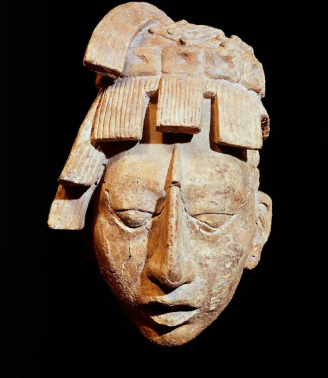

Diferentes Mitologias

Mitologia Grega
Deuses primordiais, titãs e os deuses do Olimpo — a mitologia que moldou boa parte da cultura ocidental.

Povos Maias
Uma das grandes civilizações da Mesoamérica: cidades monumentais, escrita própria e conhecimentos avançados de astronomia.

Povos Iorubás
Tradição da África Ocidental com influência profunda na cultura brasileira, dos orixás à língua do dia a dia.

Povo Inca
O maior império da América pré-colombiana, conhecido por sua organização social e arquitetura em pedra.

Xintoísmo
A espiritualidade tradicional do Japão, centrada na harmonia entre os kami e a natureza.

Povo Māori
Os indígenas polinésios da Nova Zelândia, com cultura fundamentada na conexão espiritual entre todos os seres vivos.